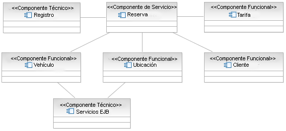
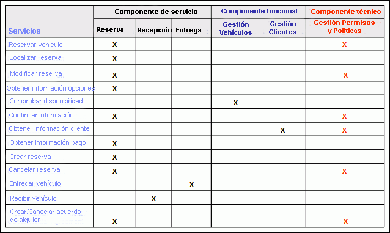

Los componentes técnicos o de infraestructura sirven para volver disponibles funciones de plataforma horizontal; es
decir, las funciones que proporcionan no son específicas del dominio empresarial pero trascienden los dominios
empresariales. Estos servicios técnicos son suministrados frecuentemente por productos de middleware que incluyen
sistemas operativos y que son utilizados directamente por el componente de servicio o por los componentes funcionales
de los que dependen.
Ejemplo
Al completar el modelo de componente Alquiler de coche (consulte el paso sobre componente funcional de arriba)
incluimos dos componentes técnicos en el modelo, uno para que la Reserva registre la finalización de una solicitud de
reserva y otro para indicar que los componentes Vehículo y Ubicación dependen de los servicios EJB para continuar sus
datos empresariales.

De forma alternativa, podemos utilizar un formato tabular al expresar los componentes necesarios y su relación con los
servicios previamente identificados, tal como se muestra en la siguiente figura.

|